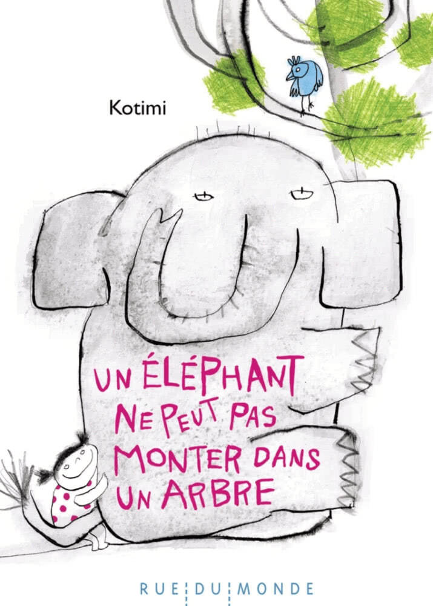
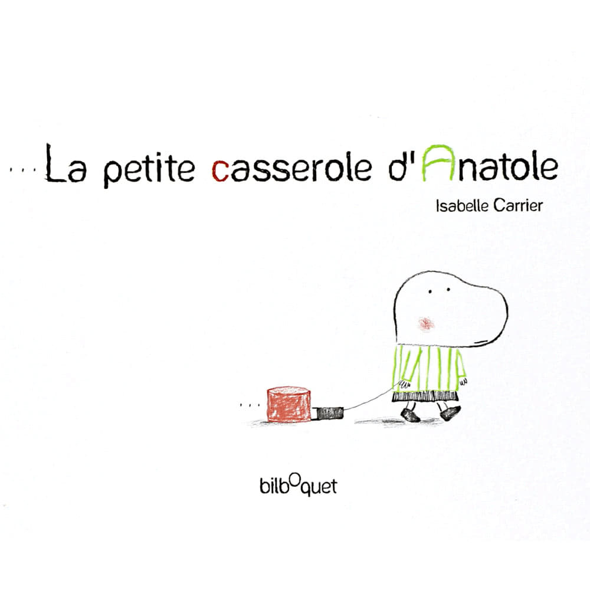
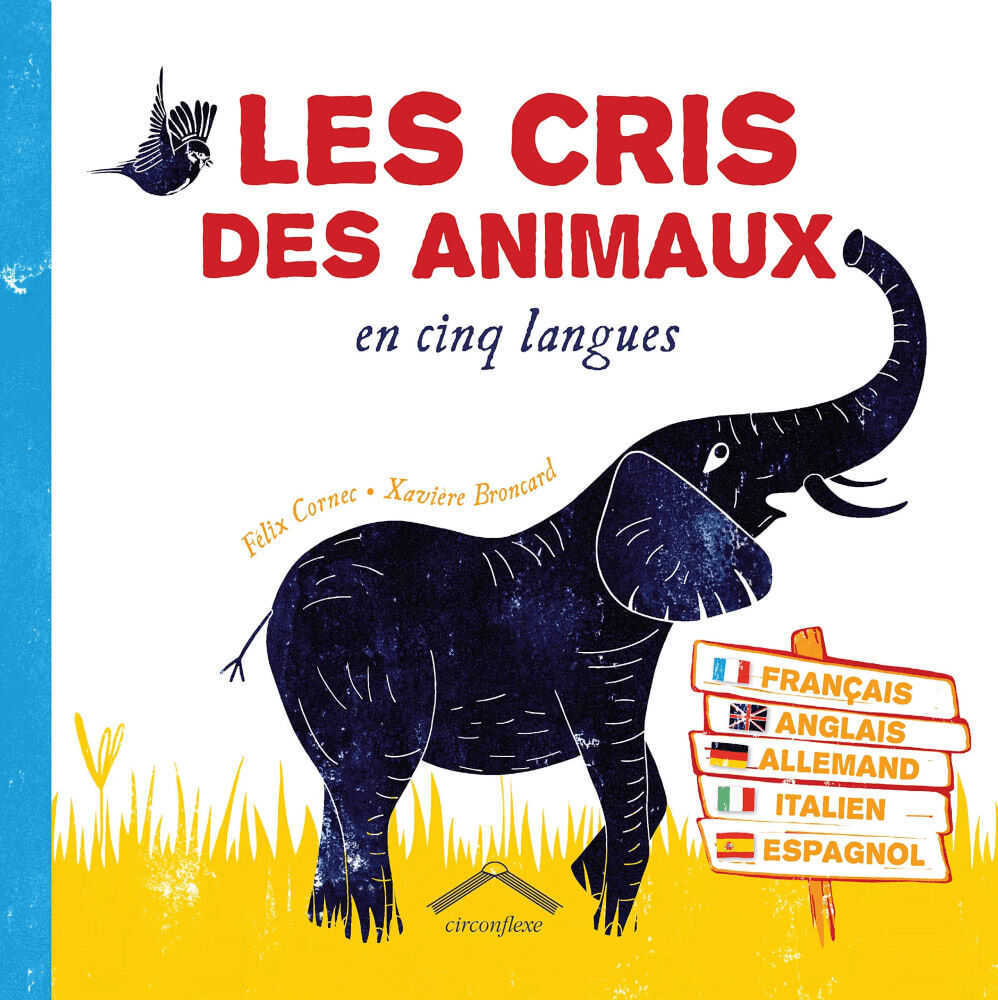
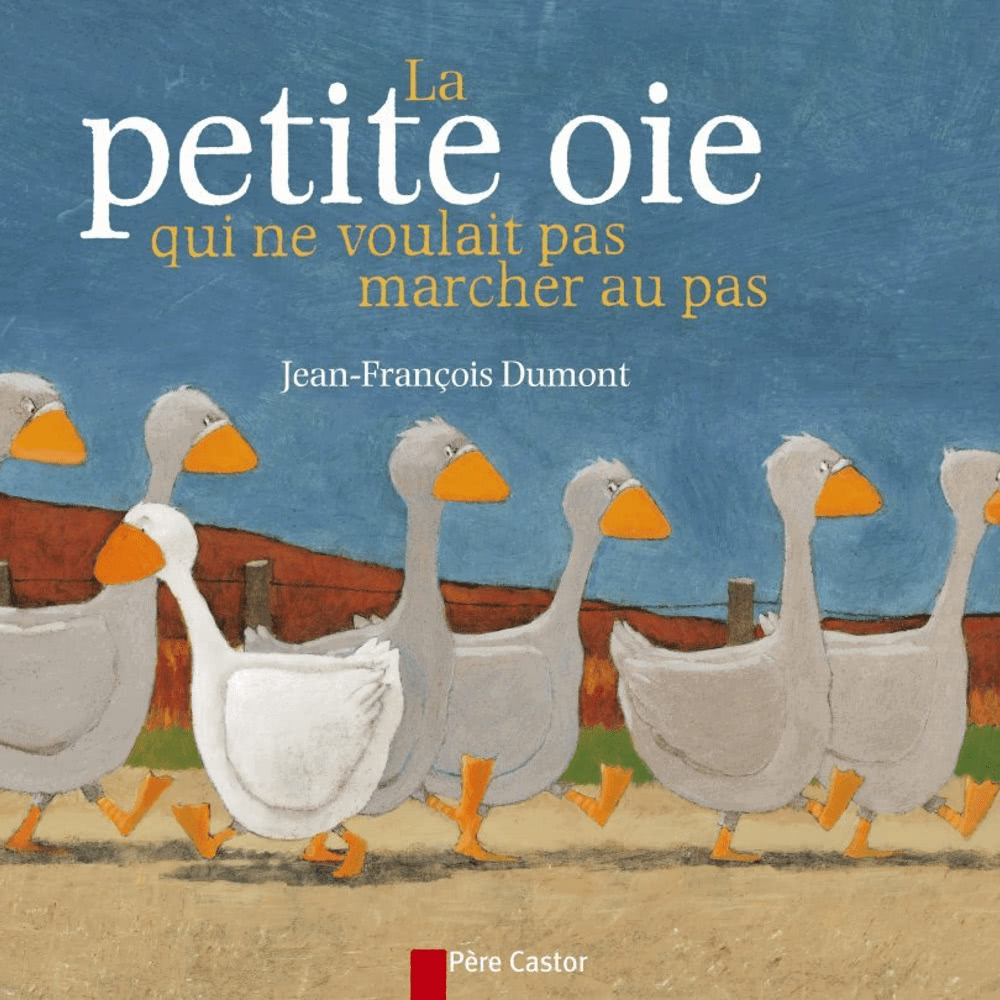
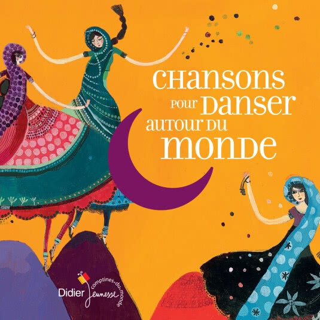
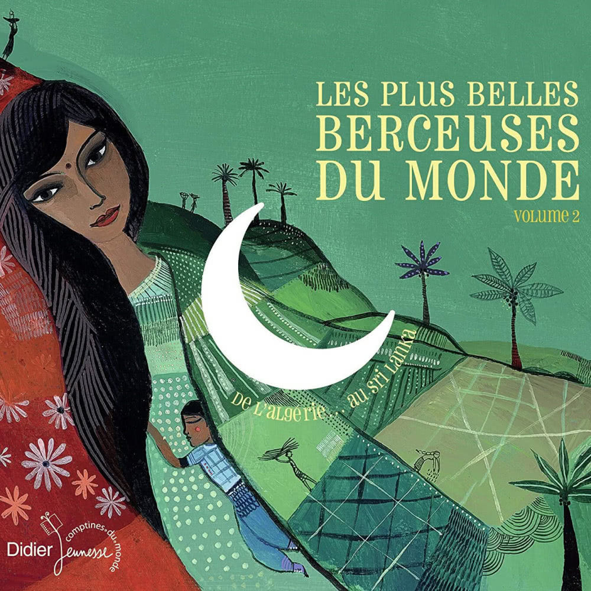
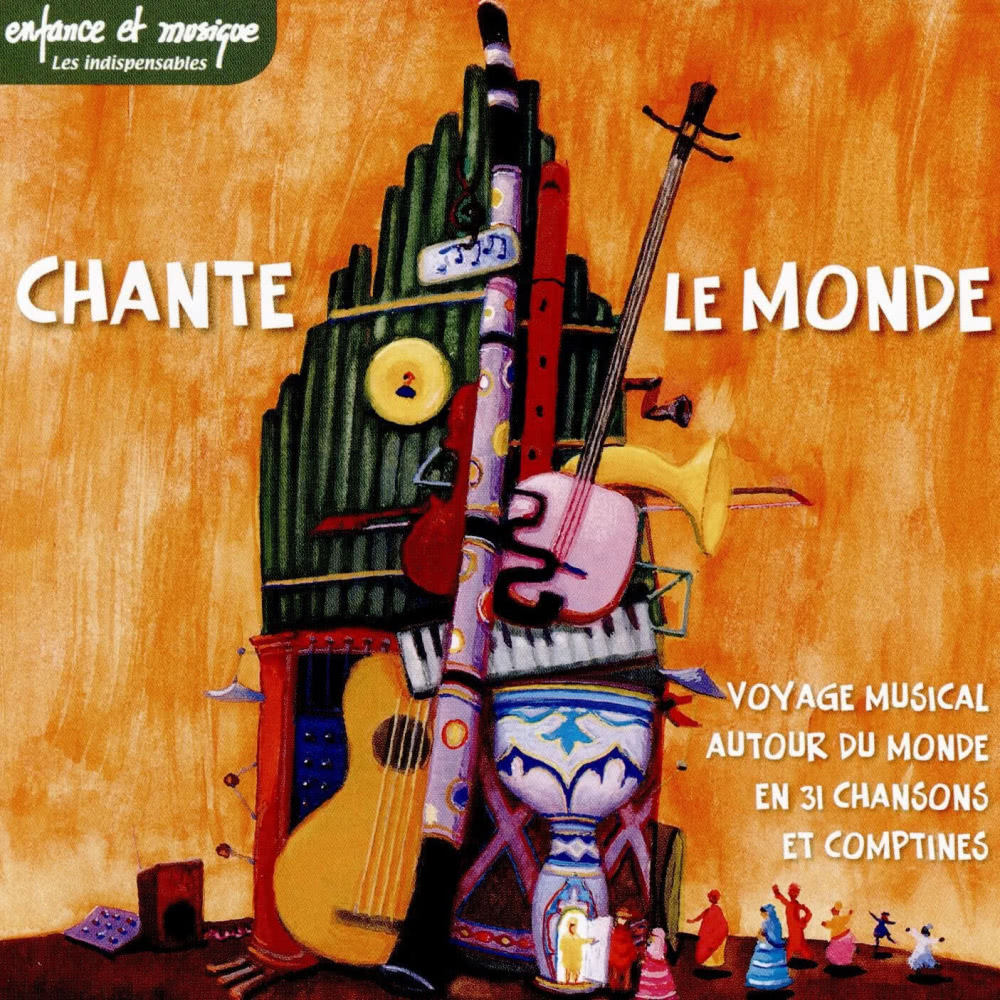

What is the Toolbox for Equality?
The Toolbox is aimed at early childhood professionals and supports them in their daily practices discovering diversity with children from 0 to 3 years old, up to 6 years old.
Education to citizenship
Fostering openness towards all, as well as living better together, requires fighting against the integration and conceptions of stereotypes from an early age. The toolbox aims at accompanying the perception of differences in the toddler without prioritization!

Early childhood
Each item in the toolbox has been selected to allow children of the earliest age to perceive differences, whether it be sounds, languages, emotions, perceptions or senses.
How is it useful?
Thanks to our network of healthcare and pedological professionals, Le Furet has gained vast knowledge on how young children develop and how they perceive differences from early on.
A child’s cognitive development depends on building categories. These categories are directly related to, and embedded in, how we as adults give hierarchy and position ourselves in relation to these categories. It is through this process that children acquire stereotypes of the world in which they live.
The Diversity toolbox allow professionals to explore and interact with the little ones around diverse approaches based on senses and emotions rather than stereotypes.

Simple tools to talk to young children about equality and diversity
The teaching toolbox is made up of several games and material that are simple to understand and use every day by professionals in their structure.


Books to read, listen and share!
The book constitutes an essential educational support for professionals in early childhood. Reading to children allows them to acquire language, concentration and listening.
It also promotes curiosity, openness to others, and the expression of emotions which are essential to stimulating the development of psychosocial skills (10 psychosocial skills according to the WHO).
When reading, the professional listens to how the child reacts and invites them to express themselves. What did they like and how did they feel, by asking open-ended questions and varying the vocabulary.
We have chosen 12 books grouped according to 5 themes: gender, diversity, disability, multilingualism and otherness…


- 
- 

- 


- 


Music from here, there and everywhere!
Music is not only a great vector of pleasure but also participates in the development of the child in terms of language, motor coordination and imagination. It stimulates attention and promotes artistic and bodily expression.
By awakening the child to multiple sounds, languages, musical styles, songs or nursery rhymes, other horizons are opened to the child.
By listening, singing, dancing, children are free to feel music in their own way.
4 musical CDs are included in the toolbox:
- 
- 
- 


With accompanying booklets, professionals can talk to children about the language and country of origin of the music. Most music lovers will not hesitate to identify the instruments, pick up the rhythms, sounds, melodies that they like the most.
It is also possible to link music and books to what children experience on a daily basis and in their families and thus allow them to be part of their history. Examples of traditional instruments: the Oud, the Kora, the Bouzouki, the Tablas, the Doudouk…
Start exploring with the sensory mat!
The five senses are the primary sources of information for everyone. From the earliest age, children use their senses to discover their environment.
With the sensory mat, the child explores a set of textures (smooth, rough, soft, etc.), smells (of essential oils), shapes (some emit sounds, others can be lukewarm on radiator or microwave to enrich the sensations).
How to use the sensory mat?
-
Material preparation
- Unfold the carpet and place the tactile plates on the hooks.
- Slip a cotton pad impregnated with a few drops of essential oils (lavender or eucalyptus - non-allergenic essences) in the pockets provided for this purpose.
- Warm the bag containing cherry stones.
-
Activities with children
- Talk with the child about the materials, the tactile sensations felt, and the smells odors.
- . Introduce variations: bare feet, touch with the elbow, cheek… what does it change?
- With the older children, you can consider blindfolding, to refine the tactile perception.
-
Educational action
- It is important to take care of the vocabulary, intonations and expressions used to describe sensations, so as not to induce value judgments (such as yuck, whaouahou, etc.).
- With the sensory mat, lead the child to discover the sensations without suggesting a hierarchy to the areas.
- In order to better accompany the child it is preferable that the mat be used individually or in a small group.
-
Our recommendations
- Contextualize: with, for example, such music associated with the passage on the carpet…
- Ask questions: is it smooth? is it sweet?
- Make sure to focus on keywords when describing the textures explored. Highlight the play of opposites: smooth/rough, soft/hard…
A doll to accompany the child’s emotions
Young children express spontaneous reactions and emotions in an inhabited and immediate way. It is therefore important for the professional to listen, to welcome and to accompany the different emotions that a child feels.
As the child grows, he or she becomes aware of what he or she feels and learns to name it. Thus children learn to verbalize their emotions. The doll in diversity toolbox, has interchangeable faces that can be scratched on depending on the situation.
Each of the faces expresses a primary emotion: joy, sadness, anger.
How to use the emotions doll?
- This doll can be offered to the child to name or designate the emotion experienced.
- It can also be used in addition to books to express the feelings of a character.
- Finally, the professional can also question the child on what the face represents, what this emotion produces or what he or she feels.
- With the emotions doll, the child is lead to discover the sensations without an imposed hierarchy of emotions.
- Do not hesitate to expand the vocabulary associated with each of the emotions represented in order to enrich the expression. For example:
- - Joy: happy, satisfied, happy, joyful, I am relaxed…
- - Sadness: upset, bored, I am sad …
- - Anger: frustrated, aggravated, I’m in pain…
- Some ideas:
- - Imitate emotions: show the doll with an emotion and suggest to children to do the same (eyebrows, mouth…)
- - Show what differs from one emotion to another (eyebrows, mouth…)
- - Complete the sentence: when I'm angry, I feel, I want…
How to borrow?
4 educational kits are available free of charge for early childhood professionals.
| Where? | Le Furet, 6 Quai de Paris, 67000 Strasbourg, France. |
| For how long? | About 3 weeks… |
| How ? | +33(0)3.88.21.96.62 or send a loan request using the form |
| What are the conditions? |
|
Call +33(0)3.88.21.96.62 or send a loan request using the form
Conditions: Follow a free initiation for professionals borrowing the case: presentation of the approach and clarification of the notions of stereotypes - prejudice - discrimination. Carry out a complete cleaning of the case before returning it (indications on the inventory provided). Duraction: About 3 weeks… Location: Le Furet, 6 Quai de Paris, 67000 Strasbourg, France.